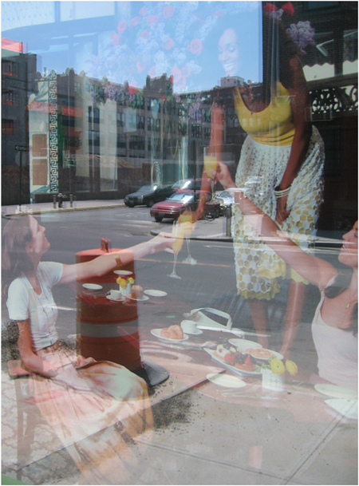

PETER SCOTT
No Place Like You
On view through August 2, 2013
For additional information and images click here

Peter Scott, Sidewalk Cafe, 2012, inkjet print, 19 x 14 inches, edition of 5
Peter Scott, Sidewalk Cafe, 2012, inkjet print, 19 x 14 inches, edition of 5
Martos Gallery
540 West 29th Street
New York, NY 10001
212.560.0670
www.martosgallery.com
info@martosgallery.com
Like us on Facebook
Follow us on Twitter